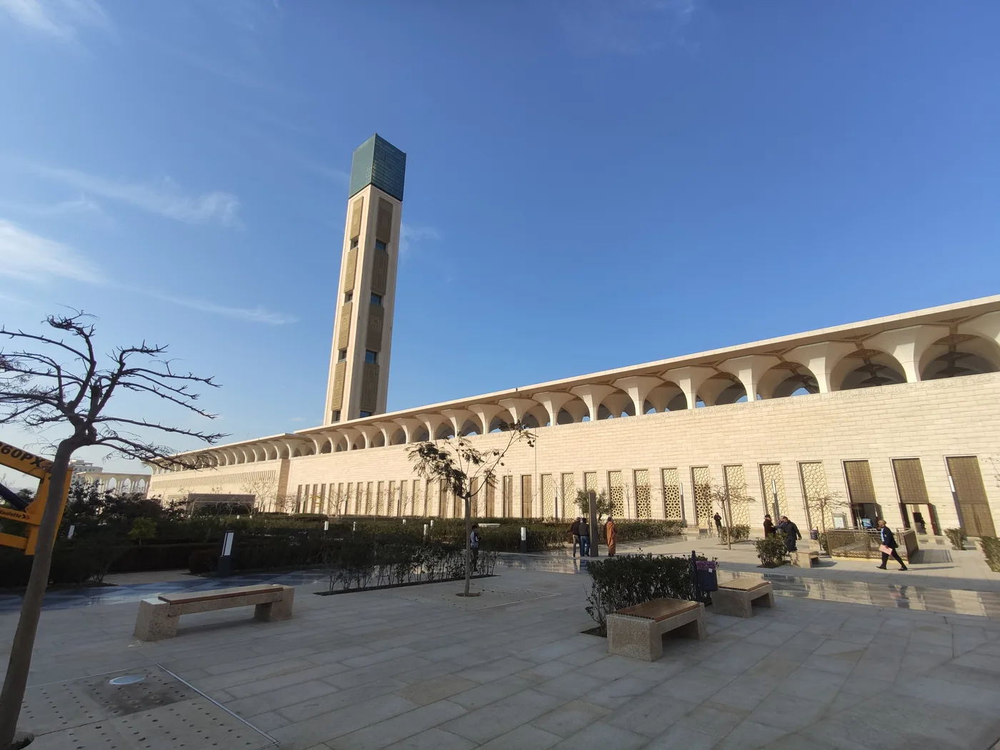
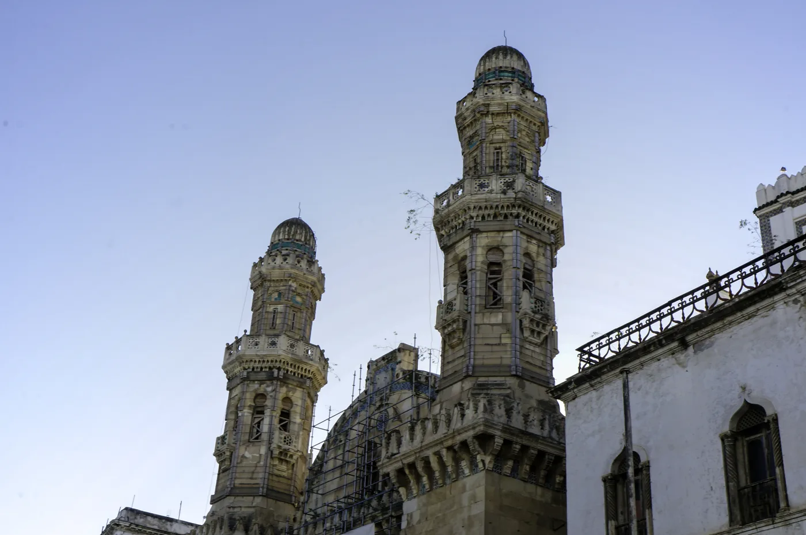

Accueil › Blog › Les mosquées d'Algérie : de l'héritage ottoman au plus haut minaret d'Afrique
Maghreb · 6 min de lecture · 2026-02-09
Les mosquées d'Algérie : de l'héritage ottoman au plus haut minaret d'Afrique
L'Algérie concentre, sur un même territoire, l'un des plus vieux sanctuaires almoravides du Maghreb et l'un des plus jeunes records architecturaux du monde musulman : un minaret de 265 mètres, achevé en 2019. Entre les deux, des siècles d'allers-retours entre pouvoirs ottoman, colonial et national.


Ketchaoua, une mosquée à trois vies
Peu d'édifices religieux ont connu un destin aussi mouvementé que la mosquée Ketchaoua, dans la Casbah d'Alger. Construite (ou largement reconstruite) à l'époque ottomane au XVIIIe siècle, elle est transformée en cathédrale après la prise d'Alger par la France en 1830 — ses deux minarets sont alors surmontés de clochers. À l'indépendance en 1962, l'édifice redevient une mosquée. Ses portes sculptées et ses colonnes de marbre témoignent aujourd'hui de ces strates successives, ottomane, coloniale, puis à nouveau religieuse musulmane.
La Grande Mosquée d'Alger, doyenne almoravide
Alger conserve aussi un patrimoine bien plus ancien : la Grande Mosquée (Djamaa al-Kebir), dont le noyau daterait du XIe siècle, sous la dynastie almoravide, ce qui en fait l'une des plus anciennes mosquées encore en activité du Maghreb central. Sa salle de prière à colonnades et son minaret sobre, ajouté au XVIe siècle, rappellent la sobriété des débuts de l'architecture mosquée nord-africaine, avant les grands décors des siècles suivants.
Djamaâ El Djazaïr, un record contemporain
À l'autre extrémité de la chronologie, Djamaâ El Djazaïr (« la Grande Mosquée d'Alger »), inaugurée en 2019 sur le front de mer, revendique le troisième rang mondial par sa capacité d'accueil et le minaret le plus haut d'Afrique, culminant à 265 mètres. Ses galeries d'arcades continues sur plusieurs centaines de mètres et sa salle de prière conçue pour résister aux séismes en font un manifeste d'ingénierie autant que de foi, à l'échelle des grands projets contemporains du Golfe.
Une architecture de transition, entre Maghreb et Méditerranée
Entre ces extrêmes chronologiques, l'Algérie a aussi hérité de mosquées ottomanes plus modestes dans les grandes villes côtières (Alger, Constantine, Annaba), reconnaissables à leurs dômes trapus et à leurs minarets octogonaux proches des modèles turcs, une signature que l'on retrouve autour de toute la Méditerranée ottomane, de Tunis à Sarajevo.
À découvrir
Mosquées citées dans cet article
À propos du contenu de cette page — Ce site propose un contenu éditorial et culturel rédigé avec soin et le souci du respect des traditions religieuses concernées ; il ne constitue pas un avis théologique ou une source d'autorité religieuse. Malgré nos vérifications, des erreurs, imprécisions ou approximations peuvent subsister. Si vous en repérez une, merci de nous la signaler via la page Contact ou par e-mail à qibla.mosk@gmail.com — nous la corrigerons avec gratitude.